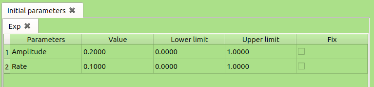
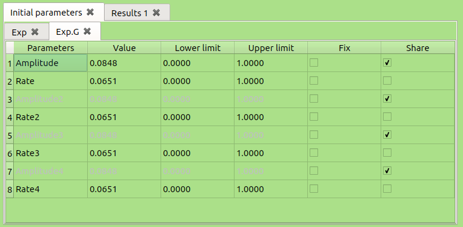

Abstract
qtFit is a program used to fit ASCII data. The graphical user interface (GUI) of qtFit is designed using QT software. The regression is done using CERN’s MINUIT routine and plotting is perfomed with the QCustomPlot library. This document is a manual of the qtFit program, and includes instructions about installation, features description, and how-to-use examples.
qtFit is used to search, view, and analyze ASCII data. It can be extended by the user to read any type of data. This program is developed by Hassan Saadaoui and is maintained as needed. It is open source and released under the General Public License (GPL). No warranty or guarantee of the results is implied. Please acknowledge the author if you are using this program. For any questions, please email at saadaoui@triumf.ca.
The program is written in C++ and QT. The latter is used for general programming as well as the graphical user interface. Version 4.8.x or 5.x is needed. The regression is done using MINUIT minimization routine developed at CERN. This package is originally in Fortran and later converted to C++. It is very powerful and well tested. QCustomPlot library (included within the package) is used for data visualization. In addition to the above requirements, and depending on your system, you may also need other packages such as gcc compiler, and automake. The qtFit package contains 4 sub-folders and 5 files.
Download the QT on-line installer from http://www.qt.io/download-open-source/. You need to install QT 4.X.X or QT 5.x binary and source packages.
To compile, do the following steps.
Extra notes: It is somewhat a challenge to compile Minuit2. These extra notes maybe useful.
The GUI has a menu bar at the very top and a tab widget below it. This tab widget contains 4 tabs (pages): Regression, Results, Plotting, and Archive. Each of these contains widgets for user input and push buttons for issuing signals. The menu bar and the pages functionalities will be described next.
File has 2 options; (i) invoke a new window, and (ii) quit/close the window.
Edit is empty for now, not finished...zzz.
View to change the widget type of the GUI (default is fuse+), and its color (default is "Green-white").
Plotting not finished...zzzz.
Help This contains the "About" dialog for authorship and version of the current GUI, "Tips" dialog which does nothing but remind the user that by hovering the mouse index onto labels one can get the tool-tips for each widget. "Tutorial" invokes an HTML page with these instructions.
The user can choose to fit either ASCII text data or something else, for now it is only ASCII. The user can locate the data using the tool button next to Data for ASCII files. The data file must reside in the working directory, otherwise its full name with path should be given. Filenames of the data to fit should be either given in the lineEdit (direct method); or using a file of .list or .inf suffix, and the user specifies the name of this file (eg: example.list or example.inf) in the lineEdit.
The inner format of the ASCII file must be set in the field format. The file must be in column format separated by space and no other characters than numbers. The limits of xmin and xmax values can be set in the options (settings) field. These must be numbers separated by commas.
The user can select the function to use, the mode of fitting (single or global) and type of errors. The functions are defined in the folder fct/ and the user can add new ones by invoking the selection "Create New" in the functions comboBox. The user must follow the instructions in the pop-up window and then select "Update" from the comboBox. This will add the newly defined function to the list.
For the global method the user can choose to show all parameters for each run or not. These settings can be changed by double clicking on the initial parameters tab-widget.
The errors are defined by MINUIT routine, and are symmetric (Migrad) or asymmetric (Minos) errors. The latter are heavy to compute and the program may become unresponsive for sometime while the computation is ongoing. For further details read http://seal.web.cern.ch/seal/documents/minuit/mnerror.pdf.
The fitting results are written to this file. The user must specify a name, or browse for an old file. The results can be either appended (using Append) to the old file keeping its content (useful for doing run by run fitting), or the old file is overwritten using Rewrite.
 
The initial parameters are read from the function library. The table contains 5 columns for the single method, and 6 columns for the global method. These columns are; (1) parameter name, (2) initial value of the parameter, (3) lower limit, (4) upper limit, (5) fix the parameter checkBox, and (6) share the parameter checkBox.
These parameters can be changed, and saved in a template for future use by right-clicking on the specific table and then choose "save as a template". This creates a text file template with a prefix ".tab". The user can change this text file as required, and the template can be loaded later for a similar function.
This prints out the output of the fit. The number of significant figures can be set by double-clicking on the results tab. One can also change the number of errors to show, and the way the filename is displayed.
The window shown in figure 8 can be invoked by double clicking on the header of the parameters table. In the pop-up window, the user can choose to show the parameters for all files in the case of a global fit, or use a common template for all files. The user can also choose to start the fit with the results of best fitting parameters of the previous file in the sequence (only valid for single fit). For the output table, the user can choose the format of the filename label, parameters precision, and number of errors to display.
This page reads the files of fitting parameters created by the analysis page. It displayed a table with two columns, the left column represents the x-axis and the right column the y-axis. Each column contains all fields found in the specified file (as created during the fitting).
The user can check any of the fields, and a matrix of plots of y versus x will be displayed. The user can clear all choices using "Clear", and kill/delete the active table using "Purge".
The plots will be displayed on the Graphics page. Horizontal or vertical error bars are displayed if specified in the chosen parameter.
The plots of the regression page and results pages are displayed here. The user can export the graphs into png or pdf, or Purge/Clear (delete) the active window(s), or go the archive database with Next.
This page offers a user-friendly interface for databases, and uses SQLite language http://www.tutorialspoint.com/sqlite/sqlite_overview.htm. At the start, the user must select a database by clicking on the toolButton next to "Database", or create a new one from the "Querry" lineEdit using SQL commands and hitting "Execute". It is advised to use an SQL manager (like the friendly browser extension SQLite manager) to create databases and tables. Then, one can use this interface to add/delete rows and edit cells, interact with the content of the database. But an experienced user can do everything from this page as well by executing the "Querry" commands. Te get familiar with the interface, "physics.sqlite" is supplied. Each contain several tables. The user can load any of these tables from the comboBox, and a model of the table will be displayed.
The user can execute any query to study the loaded table. Example;
SELECT * FROM table_of_constants where Unit="kg" will select all fields in the table_of_constants where the
unit is in kg. The user must be familiar with SQL to execute from the Query field. Any table can be changed by
adding or deleting rows. Also each cell can be edited, or displayed by clicking on "Open". This can be used to display
a cell with a lot of text or view the cell as image if the full path of the image was given in that cell.
The user can write his own fitting functions in the directory fct/. A new function must be written in C++ but requires minimal programming knowledge of this language. At template of a typical function is as follows:
The user must follow these instructions:
This compiles the library and puts a copy in the functions folder (/usr/local/qtfit/fct/).